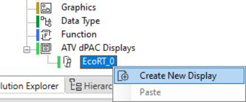
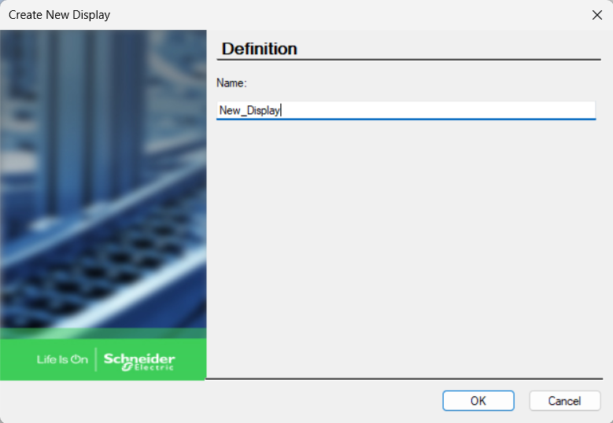
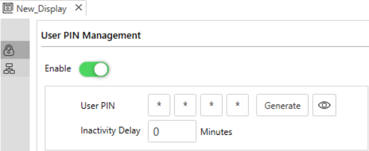
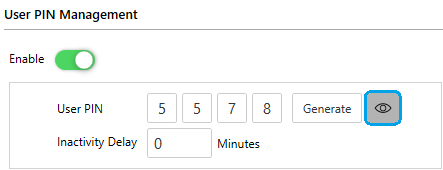
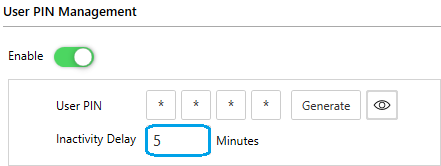

User PIN management introduces a 4-digit PIN code to the ATV dPAC Graphic Display Terminal to secure access to EcoRT application data. It is designed to improve security while keeping the interface simple and user-friendly.
The PIN is managed through the EcoStruxure Automation Expert environment and can be customized, disabled, or set with an inactivity timeout.
Once enabled, the PIN must be entered on the keypad after power cycles, application restarts, or periods of inactivity.
|
Step |
Action |
|---|---|
|
1 |
Open your solution on EcoStruxure Automation Expert software. |
|
2 |
In the ATV dPAC Displays section, right-click on EcoRT and select Create New Display.  |
|
3 |
Type the name for the display and click OK.  |

By default a random 4-digit PIN is generated automatically.
You can:
click on symbol to show the PIN.

If you want to change the User PIN you can either:
Click on Generate to generate a new random 4-digit User PIN
or type your 4-digit PIN manually.
Set the inactivity delay value in minutes.
